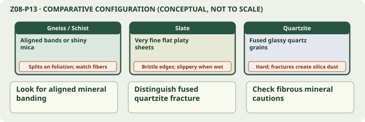

Z08-P13 · Rocks, minerals and materials · New manuscript
Metamorphic Rock Class Screening: Quartzite, Slate and Gneiss
Distinguish foliated and non-foliated metamorphic rocks by banding, sheen, and recrystallized quartz grains.
When it applies · Northern Shield terrain, southwestern Minnesota Sioux Quartzite, and glacial cobbles.
Equipment · 10x hand lens, steel scratch tool, metric scale.

Actions
- Identify foliated metamorphic rocks such as slate, schist, and gneiss by aligned platy micas, wavy mineral bands, or flat splitting planes.[R03, R04]
- Separate recrystallized quartzite from sandstone by observing fractures cutting directly through fused quartz grains rather than around loose sand.[R03, R05]
- Inspect metamorphic veins carefully for silky or splintery fibrous mineral bands and leave any suspect fibrous rock strictly untouched.[R07]
Failure recognition · Mistaking flaky mica schist for durable stone or disturbing asbestiform metamorphic veins causes tool breakage and respiratory fiber risk.[R03, R07]
Verify · Foliation presence, grain fusion, and fibrous-vein absence are documented before any close handling.[R03, R07]
Stop or change course · Stop handling any metamorphic sample showing silky fibers, crumbling metallic veins, or dust generation.[R06, R07, R14]
Evidence and editorial notes
- R03 · USGS · Collecting Rocks: Rock Classes and Mineral Property Basics (USGS GIP)
- Section: Igneous, sedimentary, and metamorphic rock classes · Conditions: Field rock class screening without laboratory petrography
Support: Observable grain interlocking, layering, bedding, or foliation helps separate broad rock classes.
Limitations: Weathered rinds and fine-grained dark rocks frequently mimic other classes visually; hand-lens inspection is preliminary only. · Conflicting evidence: None noted.
Editorial note: Establishes non-destructive classification limits. · Specialist reviewer: Field geologist
Primary source · checked 2026-11-25 - R04 · USGS · Collecting Rocks: Rock Classes and Mineral Property Basics (USGS GIP)
- Section: Hardness, luster, streak, and fracture vs cleavage · Conditions: Non-destructive mineral observation with simple field cues
Support: Scratch hardness, unglazed streak, luster, and fracture-versus-cleavage patterns narrow candidate mineral groups.
Limitations: Field scratch checks cannot establish chemical purity, trace heavy metals, or absence of hazardous fibers. · Conflicting evidence: Color alone is unreliable across quartz, calcite, and feldspar varieties.
Editorial note: Core Z08 mineral screening basis. · Specialist reviewer: Mineralogist
Primary source · checked 2026-11-25 - R05 · Minnesota DNR · Rocks and Minerals of Minnesota Educational Guide (Current web edition)
- Section: Chert, jasper, agate, and quartz occurrences · Conditions: Upper Midwest siliceous cobbles and sedimentary nodules
Support: Cryptocrystalline quartz varieties (chert, flint, jasper, agate) are hard silica rocks showing conchoidal fracture rather than planar cleavage.
Limitations: Visual similarity to fine-grained quartzite, basalt, or glass does not confirm thermal stability or structural suitability. · Conflicting evidence: None noted.
Editorial note: Anchors Z08 siliceous stone identification. · Specialist reviewer: Geologist and materials specialist
Primary source · checked 2026-11-25 - R06 · NIOSH / CDC · Crystalline Silica Respiratory Dust Hazards (2024)
- Section: Crystalline silica dust respiratory hazard · Conditions: Any grinding, hammering, knapping, or crushing of quartz, chert, sandstone, or granite
Support: Fracturing or abrading silica-bearing stone generates respirable crystalline silica dust linked to silicosis and lung disease.
Limitations: Outdoor breeze does not eliminate breathing-zone dust; avoid dry grinding/crushing and use eye and respiratory protection in authorized instruction. · Conflicting evidence: None noted.
Editorial note: Mandatory Z08 silica/eye safety gate. · Specialist reviewer: Industrial hygienist and geologist
Primary source · checked 2026-11-25 - R07 · U.S. EPA · Learn About Asbestos and Naturally Occurring Mineral Fibers (2025)
- Section: Naturally occurring asbestos and fibrous minerals · Conditions: Outcrops, fibrous veins, serpentinite, and iron-formation rock
Support: Naturally occurring asbestiform mineral fibers pose severe inhalation risks if disturbed, broken, or abraded.
Limitations: Field sight alone cannot distinguish benign fibrous minerals from regulated asbestos; leave fibrous mineral veins undisturbed. · Conflicting evidence: None noted.
Editorial note: Mandatory Z08 mineral-fiber stop rule. · Specialist reviewer: Industrial hygienist and mineralogist
Primary source · checked 2026-11-25 - R14 · USGS · National Minerals Information Center and Mineral Commodities (Current web edition)
- Section: Metallic ores, sulfides, and heavy-metal mineral toxicity · Conditions: Unidentified metallic-luster minerals, tailings, or bright oxidized crusts
Support: Sulfide ores and metallic minerals can contain lead, arsenic, mercury, or copper compounds hazardous via dust or hand-to-mouth transfer.
Limitations: Do not taste, lick, burn, or process unidentified metallic or brightly crusted minerals; wash hands after handling. · Conflicting evidence: None noted.
Editorial note: Blocks hazardous mineral extraction/handling. · Specialist reviewer: Geochemist and toxicologist
Primary source · checked 2026-11-25
Source lineage · New manuscript (Z08 P16 rock classes) · Classification · New manuscript.